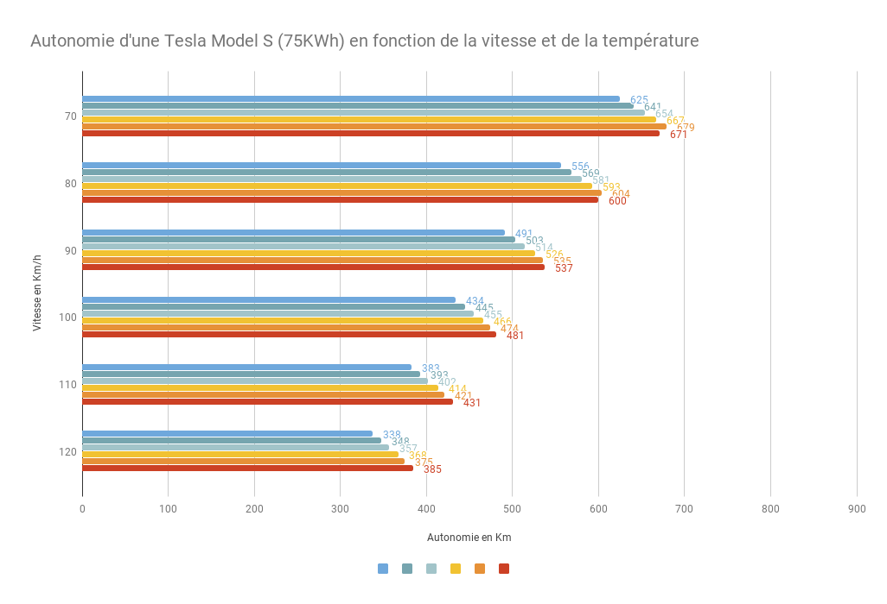

PB : En quoi le fonctionnement de la voiture à hydrogène offre t-elle une solution pour préserver l’environnement dans l’avenir ?
1ère S-SIThéodore CarbonneLouis ThomasBastien ThomasFrederic Courtaut
Découvrez!Les avantages :
L’hydrogène présente quelques avantages concernant la productivité et l’énergie propre car les voitures à hydrogène rejettent que de l’eau, il y a aucune émission de CO2.
Dans ce cas présent, cela permet de ne pas polluer sauf qu’on verra dans les inconvénients que la production d’hydrogène pollue.
La Mirai est notamment équipée de capteurs très sensibles qui, en cas de fuite d’hydrogène, gaz très volatile, ferment les robinets des réservoirs situés hors de l’habitacle, pour faciliter la dissipation du gaz. En cas d’accident grave, la structure composite plastique-carbone de la Mirai est conçue de manière à pouvoir dissiper l’énergie de l’impact et offre un très haut niveau de protection de la pile à hydrogène. Aussi la Toyota Mirai reste silencieuse par rapport aux voitures à essence
Les inconvénients :
L'hydrogène doit être utilisé avec précaution.
En effet, l'hydrogène est un gaz inflammable et explosif, de ce fait, il faut éviter tout risque de fuite, et toute situation confinée peut s'avérer dangereuse.
- Même si l'hydrogène est l'élément le plus abondant, il n'en existe pratiquement pas à l'état pur, c'est-à-dire sous forme de dihydrogène. Ce dernier doit donc être produit. La production d'hydrogène nécessite plus d'énergie que celui-ci peut en produire. L'extraction d'hydrogène nécessite de l'énergie qui va être produite par les centrales thermiques à charbon, à pétrole, à gaz naturels. Le problème vient donc de ces centrales dans la mesure où elles libèrent du dioxyde de carbone ainsi que d'autres gaz à effet de serre. Or le but du moteur à hydrogène est de faire diminuer la quantité de dioxyde de carbone (CO2) présent dans l'atmosphère.
- Pour finir, vient le problème du stockage de l'hydrogène. En effet, la légèreté de l'hydrogène se révèle être un défaut dans la mesure où, à poids égal, l'hydrogène occupe un volume beaucoup plus important qu'un autre gaz. Concrètement, il faut 4,6 litres d'hydrogène comprimés à 700 bars pour produire autant d'énergie qu'avec un 1 litre d'essence. Il y a là un grand inconvénient car ces volumes importants sont une contrainte pour le transport et le stockage sous forme gazeuse. De ce fait, il est très difficile de concevoir un réservoir compact, léger, sûr et peu coûteux tout en gardant une autonomie relativement élevée et son coût de production reste élevé.
Pour notre comparaison, nous allons prendre 2 voitures existantes sur le marché aujourd’hui d’environ la même gamme de prix : La Tesla model S (électrique 75 KWh) et la toyota Mirai (Hydrogène).
| Tesla Model S | Toyota Mirai | |
|---|---|---|
| Prix | 75 000€ | 66 000€ |
| Autonomie (Km) | 338/679 | 500/724 |
| Consommation | 20 Kw/h (moyenne) | 0.76Kg/100Km |
| Batterie/Réservoir | Batterie 75 KWh | réservoir 5Kg |
| Rechargement | -10h (monophasé) -6h50 (tri^phasé) -4h30 (réseaux EDF amélioré) |
5 mins |
| Vitesse Maximale (en Km/h) | 225 | 178 |
| 0-100 Km/h | 4.4 sec | 9.6 sec |
On constate que la Tesla est certe plus rapide et accélère plus vite, mais la toyota Mirai est moins cher avec une plus grande autonomie et surtout un rechargement en seulement 5 mins contre 4h30 à 10h pour la Tesla.
On remarque aussi que l’autonomie de la Tesla Varie beaucoup en fonction de sa vitesse et de la température exterieur. On peut voir que la Tesla à vitesse moyenne d’environ 500 Km d’autonomie. Mais ce n’est toujours pas autant que la Toyota Mirai.
Pour notre comparaison, nous allons prendre 2 voitures existantes sur le marché aujourd’hui d’environ la même gamme de prix : Bmw Serie 5 528i (moteur thermique à essence) et la toyota Mirai (Hydrogène).
| bmw serie 5 528i | Toyota Mirai | |
|---|---|---|
| Prix | 60 000€ | 66 000€ |
| Autonomie (Km) | 700/900 | 500/724 |
| Consommation | 6.8L/100 | 0.76Kg/100Km |
| Batterie/Réservoir | 68L | réservoir 5Kg |
| Rechargement | 1 minute maximum | 5 mins |
| Vitesse Maximale (en Km/h) | 250 | 178 |
| 0-100 Km/h | 6.3 sec | 9.6 sec |
On estime que ce parc automobile émet (hors poids-lourds) environ 3,8 milliards de tonnes de CO2 par an, ce qui représente un peu plus de 10 % de l’ensemble des émissions humaines.
Le premier défi concerne la durée de vie de la pile à combustible en particulier la membrane permettant la réaction. Cette membrane est très sensible à la pollution extérieur. Elle a donc besoin d'un hydrogène très pur mais aussi d'un air propre. Toyota essaie de créer des filtres très performants. Sinon il faudra rajouter un catalyseur pour nettoyer l'air des métaux lourds ou du soufre car ce sont des poisons pour la pile à combustible.
L'hydrogène est un élément qui prend beaucoup de place. Dans un camion citerne de 40 tonnes on transporte quatre vingts fois moins d'hydrogène comprimé à 200 bars que d'essence liquide. Il faut 22 camions de H2 pour transporter l'équivalent d'un seul camion d'essence. Les spécialistes estiment d'ailleurs qu'un camion d'hydrogène parcourant 500km aura consommé l'équivalent du contenu de sa citerne en énergie. Peut-être il faudra créer le transport de l'hydrogène sous forme liquide.
En raison des contraintes de sécurité à respecter pour ce gaz hautement inflammable et de le comprimer à 700 bars pour le refroidir , puisque il ne faut pas l’introduire à plus de 80 °C dans le réservoir. Mais, les stations de distribution de l’hydrogène sont très coûteuses (1,5 à 2 millions d’euros pièce, soit dix fois le prix d’une pompe à carburant classique). La France doit couvrir au minimum 1.000 stations pour le pays. Néanmoins, la compression-refroidissement est aussi énergivore : environ 10 à 15 % de l’énergie introduite dans le réservoir. La complexité des défis à relever est d’apporter la prudence des constructeurs européens. Toyota, mais aussi Honda ont annoncé un modèle en petite série pour 2016, après sa FCX Clarity de 2008 ou encore Hyundai travaillent ce sujet. Hackenberg, un directeur de la recherche et développement du groupe précise : "Nous travaillons depuis dix ans sur les piles à combustible, qui seront une partie de la mobilité électrique à l’avenir. Mais nous ne faisons pas de promesses vides. Il faut encore améliorer leur durée de vie et baisser le prix et attendre qu’un réseau de distribution d’hydrogène ait été constitué". En ce moment les prix et les capacités des batteries s’améliorent, de plus les hybrides rechargeables n’ont besoin d’aucun réseau d’énergie spécifique car leurs tarifs ont baissé pour rendre les voitures à hydrogène économiquement irréalistes.
Toyota assure la réduction de 95 % du coût de la pile à combustible entre la version de 2008 à la Mirai. Par contre, le prix reste toujours incompatible avec une production en grande série. On sait que la Mirai embarquent environ 30 g de platine pour 9 mètres carrés (900 €/m2), avec 8.000 € pour la seule membrane. Il faut ajouter plus de 2.000 € pour les deux réservoirs d’hydrogène en bobinages de carbone dans une résistance de 2.000 bars de pression équipés de leur valve de sécurité comme les systèmes de refroidissement-chauffage, l’électronique de contrôle et de puissance, la batterie, le moteur électrique… Soit le coût de production du système de propulsion de cette Mirai dépasse les 40.000 €. Contrairement, un système hybride de puissance équivalente qui vaut 6.000 € Toyota espère de diviser au moins par quatre d’ici 2030. Fin 2015, la Mirai sera vendue en Europe à 66.000 € hors taxes, cela convient à un tarif très élevé. Ensuite, il faudra bâtir un réseau de production et de distribution d’hydrogène, puisque aujourd’hui cela est encore inexistant pour le grand public. Alors que le réseau de recharges électriques est un gros soucis et que cette énergie simple est disponible partout. C’est pourquoi on ne sait pas si cela sera compliqué pour l’hydrogène.
Une production de la voiture d'hydrogène qui doit être à la fois propre et un prix acceptable constitue donc un autre défi. Aujourd’hui, l’hydrogène est majoritairement fabriqué pour l’industrie chimique ou pétrolière par vaporéformage de ce gaz naturel. Une technologie pas trop chère : 10 €/kg de dihydrogène vendu, de quoi parcourir environ 100 kilomètres, soit un coût au kilomètre comparable à celui du gazole. Cependant, il émet 10 kilos de CO2 par kilo de dihydrogène produit. Ainsi, pour alimenter la Mirai aurait un bilan CO2 plus détestable que celui d’une Prius par exemple. Il faut donc produire du dihydrogène de façon propre comme par électrolyse de l’eau à partir d’électricité. Des technologies existent mais elles sont de 30 % à 65 % plus onéreuses. Sans oublier que l’hydrogène peut devenir un carburant alternatif crédible.
La planète est aujourd'hui confrontée à un double défi : environnemental et énergétique.
L'accès à un transport propre constitue un enjeu majeur pour permettre de réduire les gaz à effet de serre et la pollution dans les villes (particules et bruit).
Utilisé dans une pile, l'hydrogène se combine à l'oxygène de l’air pour produire de l'électricité en ne rejetant que de l’eau.
L'hydrogène peut être produit produit a partir de sources d'énergies diverses, et en particulier à partir d'énergies renouvelables.
L'hydrogène représente donc un fort potentiel pour finir de l’énergie propre et offre une alternative aux énergies fossiles.
Air Liquide présente sur l’ensemble de la chaîne industrielle de l’énergie hydrogène :
production stockage distribution et utilisation par le client final.
En tant que leader mondial des gaz, technologies et services pour l’industrie et la santé, Air Liquide souhaite faciliter l'accès du plus grand nombre a une énergie propre.
Les véhicules fonctionnant à l'hydrogène n’émettent aucun gaz à effet de serre, offrent un gain de productivité et sont d’une grande flexibilité. L'hydrogène offre aux utilisateurs une source d’énergie fiable et respectueuse de l’environnement. Ces avantages ont été mis en évidence sur le marché nord-américain ou plus de 5000 chariots élévateurs à l'hydrogène ont été déployés. Le potentiel de développement de ce marché en Europe pourrait être de l’ordre de 10000 unités à l’horizon 2020.
L’hydrogène est aujourd’hui largement utilisé pour la désulfuration des hydrocarbures (environ les 2/3 de la quantité vendue par le Groupe sont ainsi utilisés) afin de produire des carburants sans soufre.
En 2015, les volumes d’hydrogène fournis par Air Liquide aux raffineries du monde entier ont permis d’éviter le rejet d’environ 1 200 000 tonnes d’oxydes de soufre dans l’atmosphère,
ce qui est supérieur à quatre fois la totalité des émissions d’oxydes de soufre d’un pays comme la France.
Enlever le soufre contenu dans les hydrocarbures est rendu obligatoire par la réglementation européenne et américaine car cela est nécessaire pour réduire les émissions d’oxydes de soufre dans l’atmosphère.
Ces oxydes peuvent provoquer des problèmes respiratoires chez l’homme.
Ils sont non seulement responsables des brouillards de pollution qui se forment au-dessus de certaines agglomérations, mais également des pluies acides qui entraînent la déforestation et l’acidification de l’eau.
Le soufre entraîne aussi une dégradation rapide des pots catalytiques des véhicules.